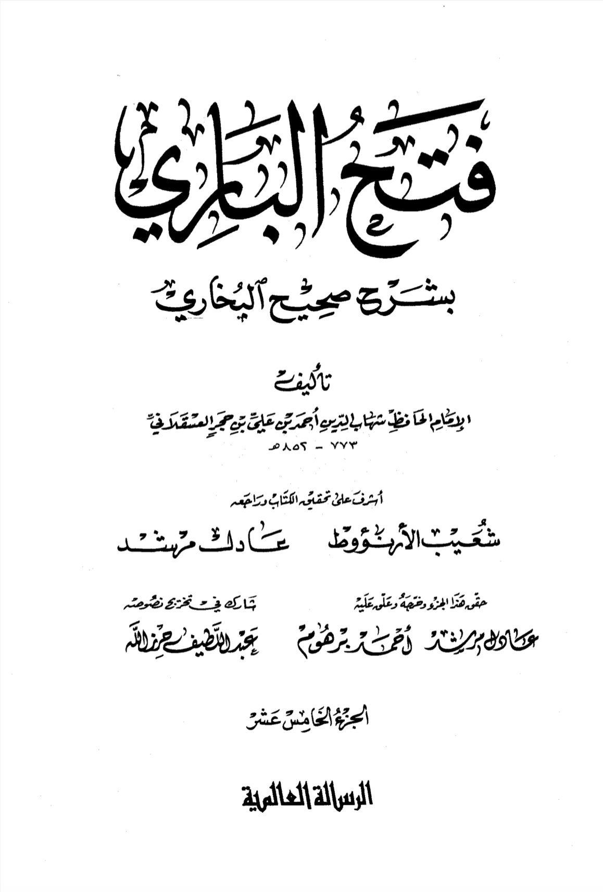
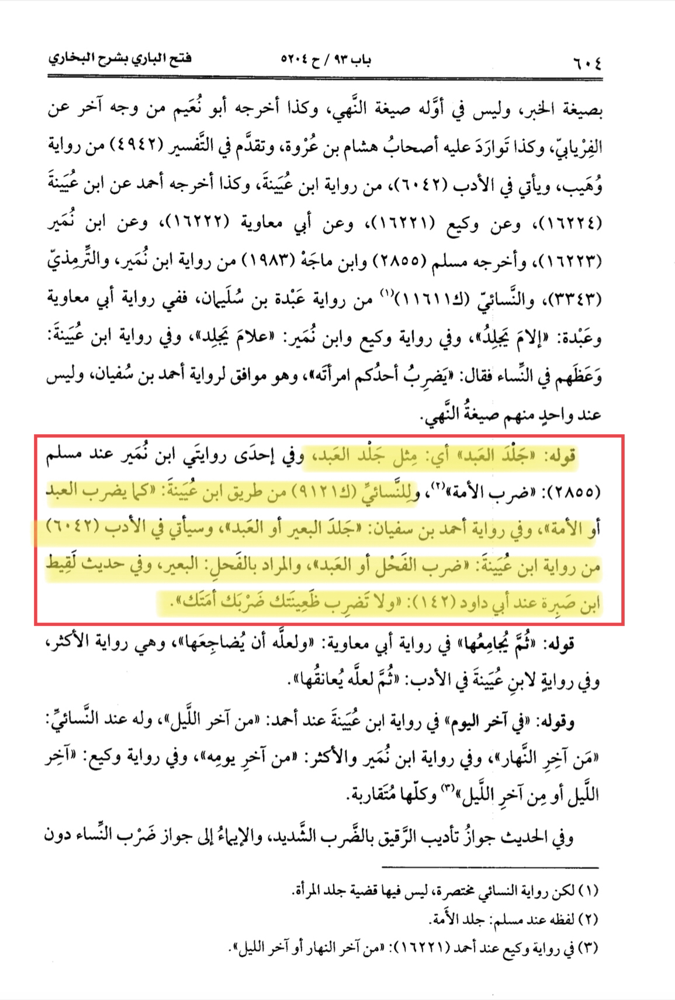

The full narration is lengthy
so let us take a look at the
relevant paragraph from it
I (the narrator Laqit) then
said: Messenger of Allah, I have a wife who has something (wrong) in her
tongue , i.e. she is insolent.
He said: Then divorce her. I
Messenger of Allah, she had company with me
and I have children from her. He said: Then ask her
(to obey you). If there is something good in her, she will do so (obey); and do
not beat your wife as you beat your slave-girl
The full context indicates that this was a way of explaining or conveying the message of not beating the
wife. It also does not encourage beating of slave girls.
Al-Khattabi states:
Hallowayy It forbids severe beating
like the beating of the slaves by the one who
beats them and makes wrong use of his authority with regards to them. And
the similitude of beating the
slaves does not mean permissibility of beating
them. The mention of it is
made by the way of condemnation of their
deeds and it prohibit imitating the same. Verily
the Prophet (¿) has prohibited the beating of
the slaves except by the way of prescribed punishments (hudood) and he has ordered to be kind towards them
-Ma'alim Al Sunan
Likewise as-Sindi states: And the similitude is not provided in order to denote the permissibility of
beating the slaves rather it was utilized because it was general practice (i.e. in seventh century Arabia) for
slaved to be beaten
-Hashia 'Ala Musnad The statement was spoken as a similitude and the
beating of slave was mentioned as an example.
If one were to say that so- and-so treats his friends like animals, this would
mean that he treats them poorly and would not
indicate as to how he treats animals. Perhaps this person is very nice towards animals; the statement is
a figure of speech. Similarly,
not treating ones wife as a
slave-girl is to be understood in like manner.
Moreover, this can be confirmed by the fact that the narrator Lagit Ibn Sabirah had come to the Prophet
(saw) as a part of a delegation from Iraq from the tribe of Banu al-
Muntafiq. For 'as you beat your slave-girl' to be literal, the Prophet (saw) would
have to know Lagit Ibn Sabirah quite well from well before and would have to
know how he treats his
slave-girls and would even
have to know if he had any
slave girls or not.
Moreover the prothet had explicitly stated how to treat wifes
"Zadhan reported that Ibn Umar called his slave and he found the marks (of beating) upon his back.
He said to him: I have caused
you pain. He said: No. But he (Ibn Umar) said: You are free. He then took hold of something from the earth
and said: There is no
reward for me even to the weight equal to it. I heard Allah's Messenger (saw) as
saying: He who beats a slave without cognizable offence of his or slaps him,
then expiation for it is that he should set him free."
Sahih Muslim, book 15, no.
4079
Abu Huraira reported Allah's Messenger (49) as saying: "When the slave of anyone amongst you
prepares food for him and
he serves him after having sat close to (and
undergoing the hardship of) heat and smoke, he should make him (the slave) sit along with him and make
him eat (along with him),
and if the food seems to run short, then he should spare some portion for him
(from his own share) -
(another narrator) Dawud said:" i. e. a morsel or two". Sahih Muslim, book 15, no.
4096/4097
Narrated AbuDhabi Prophet (a) said: Feed
those of your slaves who please you from what you eat and clothe them with
what you clothe yourselves, but sell those who do not please you and do not
punish Allah's creatures."
Sunan Abu Da'ood, book
41, no. 5142
Narrated Al-Ma'rur: At Ar- Rabadha I met Abu Dha who was wearing a cloak, and his slave, too,
was wearing a similar one. I
asked about the reason for it. He replied, "I abused a
person by calling his mother with bad names."
The Prophet said to me, 'O
Abu Dhabi Did you abuse him by calling his mother with bad names You still have some characteristics
of ignorance. Your slaves are your brothersand Allah has put them under your command. So whoever has
a brother under his command should feed him
of what he eats and dress him of what he wears. Do not ask them (slaves) to do
things beyond their capacity (power) and if you do so, then help them.'
Sahih Bukhari, vol 1, book
2, no. 29
Abu Mas'ud al-Ansari reported: "When I was
beating my servant, I heard a voice behind me (saying):
Abu Mas'ud, bear in mind Allah has more dominance over you than you have upon him. I turned and
(found him) to be Allah's
Messenger (saw) I said: Allah's Messenger, I set him free for the sake of Allah.
Thereupon he said: Had you not done that, (the gates of) Hell would have opened for you, or the fire
would have burnt you."
Sahih Muslim, book 15, no.
4088
Another narration found in al-bukhari but ibn hajar said جلد العبد means مثل جلد العبد that is a
metaphor because the pre Islamic people used to flog there slaves. Ibn hajar then continues on to
quote narration where it says مثل or like
Fathul bari Sharhu Sahih al-bukhari volume 15 page number 604 explaining hadith number 5204


Translation:
Ibn Qudamah said in al-Mughni: He has the right to discipline his male and female slave if they sin,
by reprimanding and light beating, just as he disciplines his son and his wife for disobedience,
and he does not have the right to strike him for no sin, nor to severely beat him even if he sinned,
nor to slap him in the face, and it was narrated on the authority of Ibn Muqrin al-Muzani that he said
You saw me as the seventh of seven, we have only one servant, so one of us slapped her, so the Prophet,
may God’s prayers and peace be upon him, commanded us to set her free, so we set her free.
And it was narrated on the authority of Abi Masoud, he said: I was beating a boy of mine,
and then a man behind me said: Know Aba Masoud, know Aba Masoud. Uh.
Ibn Muflih said in al-Furu’: Harb reported – meaning on the authority of Imam Ahmad:
He should not strike him except for a sin after he had forgiven him once or twice,
and he should not strike him severely.
And Hanbal said: He does not strike him except for a grave sin, because he, may God’s prayers and
peace be upon him, said: If a female slave of one of you commits adultery, let him flog her.
And he ties him up if he fears for him, and beats him without hurting him.
The apparent meaning of this narration agrees with what was previously chosen by our sheikh.
And others transferred: It is not restricted and sold, more beloved to me.
And Abu Dawud transmitted: He is disciplined in his duties and if he carries him as much as he can bear.
Abu Dawud and Al-Tirmidhi narrated from the hadith of Ibn Omar that a man said: O Messenger of God,
how much should we forgive a servant? So he was silent, then he repeated the words to him,
so he was silent, and when he was at the third, he said: I pardon him seventy times every day.
A good hadith. Uh. This hadith was authenticated by Al-Albani.